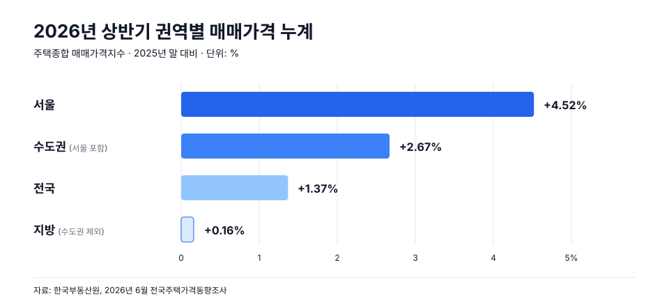
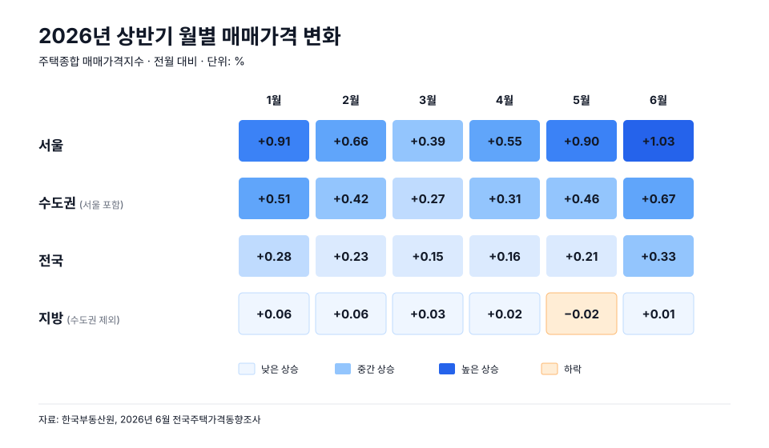
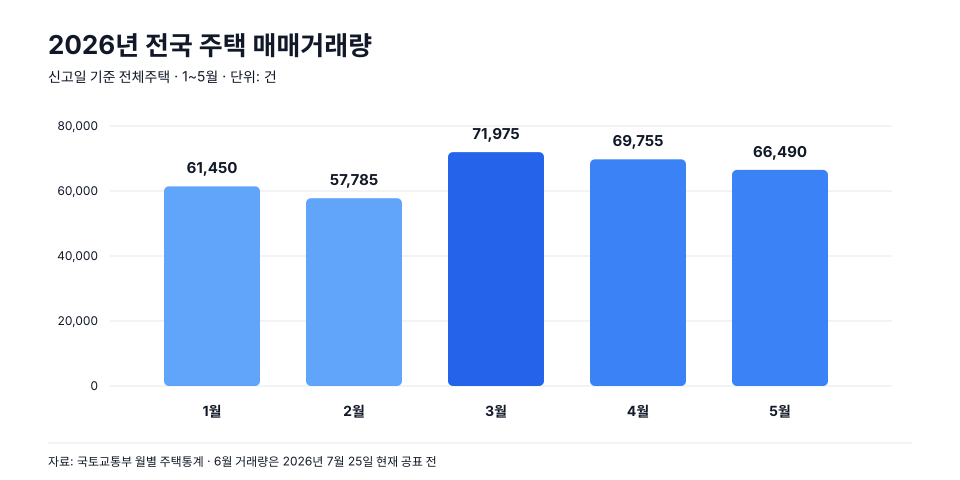

2026년 상반기 매매 이슈 정리 — 가격 흐름·규제지역·양도세
상반기 주택종합 매매가격은 전국 1.37% 올랐지만 서울은 4.52%, 지방은 0.16%였습니다. 1~5월 거래량은 전년보다 늘었어도 3월을 고점으로 두 달 연속 줄었습니다. 전국 회복보다 서울·수도권에 집중된 가격 상승이 상반기를 설명하는 더 정확한 문장입니다.
1. 상반기 전체를 먼저 보면
한국부동산원의 주택종합 매매가격지수로 1~6월을 묶어 보면 전국은 1.37%, 수도권은 2.67%, 서울은 4.52%, 지방은 0.16% 올랐습니다. 이는 개별 주택의 평균 가격이 그만큼 올랐다는 뜻이 아니라, 표본 주택의 가격 변화를 지수로 측정한 전년 말 대비 누계 변동률입니다.

| 권역 | 상반기 누계 | 상반기의 의미 |
|---|---|---|
| 서울 | +4.52% | 상승이 가장 빠르고 5~6월에 다시 가속 |
| 수도권 | +2.67% | 서울과 경기 선호지를 중심으로 전국 상승을 주도 |
| 전국 | +1.37% | 플러스 흐름이지만 수도권의 영향이 큼 |
| 지방 | +0.16% | 전체로는 보합에 가깝고 지역별 상승·하락이 혼재 |
상반기 전체를 한 문장으로 정리하면 연초 강세, 2~3월 상승폭 둔화, 2분기 재가속입니다. 다만 재가속이 지방까지 넓게 퍼진 것은 아닙니다. 전국 수치만 보면 완만한 회복처럼 보이지만 실제로는 서울과 수도권의 상승이 평균을 끌어올린 구조입니다.
2. 월별로 달라진 지점
월별 수치는 주택종합 매매가격지수의 전월 대비 변동률입니다. 서로 다른 지표를 섞지 않고 같은 조사·같은 주택 범위로 1월부터 6월까지 이어 보면 흐름이 선명해집니다.

1월: 강한 출발
1월은 전국 0.28%, 수도권 0.51%, 서울 0.91%, 지방 0.06%였습니다. 2025년 4분기의 상승 흐름이 서울과 수도권을 중심으로 이어졌고, 출발부터 권역 간 속도 차가 컸습니다.
2~3월: 상승은 이어졌지만 속도는 낮아짐
전국 상승률은 2월 0.23%에서 3월 0.15%로, 수도권은 0.42%에서 0.27%로 낮아졌습니다. 서울도 0.66%에서 0.39%로 둔화했습니다. 가격이 하락한 것이 아니라 오르는 속도가 두 달 연속 낮아진 구간입니다.
4월: 재가속이 시작된 달
4월에는 전국 0.16%, 수도권 0.31%, 서울 0.55%로 전월보다 상승폭이 다시 커졌습니다. 지방은 0.02%에 그쳐 서울·수도권과 같은 방향으로 움직였다고 보기는 어려웠습니다.
5~6월: 서울·수도권 집중이 가장 뚜렷해짐
5월 서울은 0.90%, 수도권은 0.46%로 상승폭이 커졌지만 지방은 0.02% 하락했습니다. 6월에는 서울 1.03%, 수도권 0.67%, 전국 0.33%로 상반기 중 가장 높은 월간 상승률을 기록했고 지방은 0.01% 상승에 머물렀습니다. 6월 경기에서는 화성 동탄구가 6.81% 오르는 등 일부 지역의 급등이 권역 평균을 끌어올렸습니다.
따라서 상반기 흐름을 “계속 상승했다”로만 쓰면 중요한 부분이 빠집니다. 정확한 순서는 강한 출발 → 2~3월 둔화 → 4월 반등 → 5~6월 서울·수도권 중심 재가속입니다.
3. 거래·공급은 가격과 같은 속도가 아니었다
국토교통부의 신고일 기준 주택 매매거래량은 1~5월 누계 327,455건으로 전년 같은 기간보다 15.1% 늘었습니다. 다만 월별로는 3월 71,975건을 고점으로 4월 69,755건, 5월 66,490건으로 두 달 연속 줄었습니다.

가격은 4월부터 다시 가속했지만 거래량은 3월 이후 줄었습니다. 이 차이는 상승 거래가 시장 전체로 넓게 확산되기보다 특정 지역·단지에 집중됐을 가능성을 보여줍니다. 다만 6월 거래 통계가 나오기 전에는 6월 가격 급등이 거래 증가를 동반했는지 단정할 수 없습니다.
지역별 차이도 컸습니다. 5월 서울 주택 매매거래는 14,145건으로 전년 동월보다 30.2% 늘었지만 지방은 28,013건으로 7.7% 줄었습니다. 가격과 거래 모두 서울·수도권의 회복 강도가 상대적으로 높았습니다.
공급은 또 다른 방향입니다. 1~5월 전국 준공은 88,143호로 전년 같은 기간보다 46.7% 줄었습니다. 동시에 5월 말 미분양은 65,239호, 준공 후 미분양은 29,350호였습니다. 입주 물량 감소와 지방의 미분양 부담이 함께 존재하므로 공급 감소를 전국적인 가격 상승 신호로 단순 해석하면 안 됩니다.
매수자는 최근 3개월의 동일 단지 거래량과 실거래가, 매물 체류기간을 함께 보세요. 매도자는 신고가 한 건보다 같은 평형의 반복 거래와 실제 잔금 가능한 수요를 확인해야 합니다. 전국 상승률은 협상 근거가 아니라 시장 배경입니다.
4. 하반기는 상승률보다 확산 여부가 중요하다
한국건설산업연구원은 2026년 하반기 주택종합 매매가격을 전국 1.5%, 수도권 2.5%, 지방 0.3% 상승으로 전망했습니다. 연간 기준 전망은 전국 2.5%, 수도권 4.5%, 지방 0.5%입니다. 다만 이 수치는 정해진 결과가 아니라 공급·전세·금리·대출정책이 현재 방향을 유지한다는 전제 아래의 기준 시나리오로 보는 것이 적절합니다.
| 가격을 받치는 요인 | 상승폭을 제한할 요인 |
|---|---|
| 입주 예정 물량 감소와 서울·수도권 선호지의 매물 부족 | 기준금리 인상과 가계대출 총량 관리 |
| 전세가격 상승이 매매가격의 하방을 지지 | 서울의 높은 주택구입 부담과 누적 가격 상승 |
| 정비사업·신축·역세권 등 희소 입지 선호 | 규제지역 확대와 가격대별 주담대 한도 |
| 일부 금융자산 상승에 따른 자기자금 여력 개선 | 지방 준공 후 미분양과 낮은 입주율 |
가장 가능성이 높은 경로는 수도권의 상승 흐름이 이어지되 지역과 상품별 격차가 더 커지는 모습입니다. 서울 핵심지와 신축·역세권은 공급 희소성과 전세 강세의 영향을 먼저 받는 반면, 지방은 산업기반이 탄탄한 도시의 대표 단지 정도로 회복 범위가 제한될 수 있습니다. 지방 전망치가 플러스로 바뀌었다고 해서 시장 전체가 추세 상승으로 전환됐다고 해석하기는 이릅니다.
하반기에 볼 것은 전망치 자체보다 다음 네 가지입니다.
- 상승의 폭: 서울 핵심지의 상승이 경기 외곽과 중저가 주택까지 번지는지
- 거래의 질: 거래량이 함께 늘어나는지, 소수 신고가가 지수를 끌어올리는지
- 전세의 전이: 신규 전세가격과 전세가율 상승이 실제 매수 전환으로 이어지는지
- 공급의 시차: 당장 입주할 주택 감소와 2~3년 뒤 인허가·착공 회복을 구분해 보는지
가격이 오르더라도 거래가 따라오지 않으면 얇은 시장에서 형성된 상승일 수 있습니다. 반대로 대출 규제로 거래가 줄어도 전세와 입주 물량이 가격 하단을 받치면 큰 폭의 조정이 나타나지 않을 수 있습니다. 그래서 하반기 판단은 상승·하락의 한 방향보다 어디까지, 어떤 거래를 동반해 움직이는지에 초점을 맞춰야 합니다.
5. 동탄구·기흥구·구리시 규제지역 지정
2026년 7월 1일부터 화성시 동탄구, 용인시 기흥구, 구리시가 투기과열지구와 조정대상지역으로 지정됐습니다. 가장 즉각적인 변화는 주택담보대출 LTV가 원칙적으로 70%에서 40%로 낮아졌다는 점입니다.
| 확인 항목 | 변화 | 계약 전에 할 일 |
|---|---|---|
| 주택담보대출 LTV | 원칙 70% → 40% | DSR까지 반영한 은행의 실제 가능액 재확인 |
| 경과 규정 | 6월 30일까지 대출 신청 완료 또는 계약·계약금 납부 증빙 시 종전 규정 가능 | 가계약 문구가 아니라 계약서·이체내역·접수일 보관 |
| 세금·청약·전매 | 규제지역 지정에 따라 별도 요건 변화 가능 | 대출 규정과 세법·청약 규정을 따로 확인 |
같은 “규제지역”이라도 대출, 세금, 청약의 판단 기준일과 예외가 서로 다릅니다. 특히 계약금만 보낸 가계약이 모든 경과 규정에서 인정된다고 단정하면 안 됩니다. 계약일·신청일·소유권 이전일을 각각 확인해야 합니다.
6. 다주택자 양도세 중과 유예 종료
조정대상지역 주택에 대한 다주택자 양도소득세 중과 한시 배제는 2026년 5월 9일 종료됐습니다. 2년 이상 보유한 조정대상지역 주택을 양도할 때 2주택자는 기본세율에 20%포인트, 3주택 이상은 30%포인트가 가산되고 장기보유특별공제도 적용되지 않는 것이 기본입니다.
- 적용 범위: 모든 다주택 매도가 아니라 양도 시점에 조정대상지역에 있는 주택이 핵심입니다.
- 경과 조치: 5월 9일까지 계약하고 계약금을 받은 사실이 증빙되면, 강남·서초·송파·용산은 4개월, 그 밖의 조정대상지역은 6개월 안에 잔금을 받고 등기해야 종전 한시 배제를 적용할 수 있습니다.
- 가계약 주의: 국세청은 가계약을 경과 조치의 계약으로 인정하지 않는다고 안내했습니다.
국세청 예시에서는 양도가액 20억원, 취득가액 10억원, 15년 보유 주택의 세액이 한시 배제 시 약 2억5,701만원이지만 중과 시 2주택자는 약 5억8,251만원, 3주택 이상은 약 6억8,226만원으로 커집니다. 실제 세액은 필요경비, 보유·거주 기간, 주택 수 판정에 따라 크게 달라지므로 매도 계약 전에 세무 검토가 필요합니다.
매수자에게도 남의 세금 문제가 아닙니다. 매도자의 잔금 기한이 촉박하면 가격 협상 여지가 생길 수 있지만, 반대로 세금 계산이 뒤늦게 틀어지면 잔금일 변경이나 계약 이행 분쟁이 생길 수 있습니다. 계약서에 잔금일, 임차인 인도, 담보 말소 책임을 명확히 적으세요.
7. 세입자 있는 집 매매와 입주 약정 예외
금융당국은 다주택자가 보유한 수도권·규제지역 아파트를 무주택자가 매수하는 일부 거래에 한해 주택구입 목적 주담대의 입주 의무 이행 시점을 늦출 수 있도록 했습니다. 2026년 12월 31일까지 매매계약을 체결하고 아래 조건을 모두 충족해야 합니다.
- 매도자가 다주택자일 것
- 대출 신청일 현재 매수자 세대가 무주택일 것
- 수도권 또는 규제지역 아파트이며 만기일시상환 주담대가 설정된 거래일 것
- 2026년 12월 31일까지 매매계약을 체결할 것
조건을 충족하면 입주 약정은 대출 실행 후 6개월과 기존 임대차 종료 후 1개월 중 더 늦은 날까지 이행할 수 있습니다. 이는 세입자 있는 집을 전부 자유롭게 살 수 있다는 뜻이 아닙니다. 임대차 만기, 갱신요구권, 보증금 반환 재원, 은행의 사전 확인이 여전히 필요합니다.
8. 금리·대출이 다시 가격 변수로
한국은행은 7월 16일 기준금리를 2.50%에서 2.75%로 0.25%포인트 올렸습니다. 금융위원회 통계상 6월 전 금융권 가계대출은 8.3조원 늘었고 주택담보대출은 4.5조원 증가했습니다. 가격 상승 지역에서 대출 수요가 다시 커지자 금융비용과 총량 관리가 동시에 강화되는 흐름입니다.
따라서 매매가는 “대출이 최대한 나온다”는 가정으로 정하지 말고, 보수적인 감정가·LTV·스트레스 DSR·은행별 총량 한도를 모두 통과한 확정 가능액을 기준으로 역산해야 합니다. 자세한 최신 규정은 2026년 상반기 대출 이슈 정리에서 이어서 확인할 수 있습니다.
매수자·매도자 실전 체크리스트
| 매수자 | 매도자 |
|---|---|
| 계약 당일의 규제지역 여부와 은행 LTV 확인 | 양도일 기준 주택 수·조정대상지역 여부 확인 |
| 호가가 아닌 최근 동일동·동일평형 실거래 비교 | 중과 경과 조치의 계약일·잔금 기한 증빙 |
| DSR·취득세·중개보수까지 포함한 총비용 계산 | 임차인 보증금 반환과 근저당 말소 재원 확보 |
| 세입자 승계 시 계약·갱신·보증금 현황 원본 확인 | 잔금일 변경 시 세금과 대출 영향 재검토 |
| 대출 미승인 시 책임을 정한 특약 작성 | 가격보다 실제 잔금 가능한 매수자인지 확인 |
자료 출처와 해석 시 주의점
- 한국부동산원 — 2026년 6월 전국주택가격동향 (1~6월 월별·상반기 누계 시계열)
- 국토교통부 월별 주택통계 — 1월 · 2월 · 3월 · 4월 · 5월
- 한국건설산업연구원 — 2026년 하반기 주택·부동산 경기 전망
- 금융위원회 — 동탄구·기흥구·구리시 규제지역 지정 관련 금융조치
- 국세청 — 다주택자 양도소득세 중과 유예 종료 안내
- 금융위원회 — 다주택자 주택 매수 관련 입주 약정 FAQ
- 한국은행 — 2026년 7월 통화정책방향
가격 그래프는 한국부동산원 주택종합 매매가격지수의 전월 대비 변동률과 전년 말 대비 누계입니다. 거래량 그래프는 국토교통부의 신고일 기준 전체주택 거래량입니다. 조사 방식과 기준 기간이 다른 수치를 한 축에서 직접 비교하지 않았습니다.
이 글은 2026년 7월 25일 기준 일반 정보입니다. 정책의 적용 여부는 계약일·양도일·주택 수·지역·대출 접수일에 따라 달라집니다. 실제 계약과 세금 신고 전에는 금융회사, 세무사 또는 관계 기관에 개별 사실관계를 확인하세요.